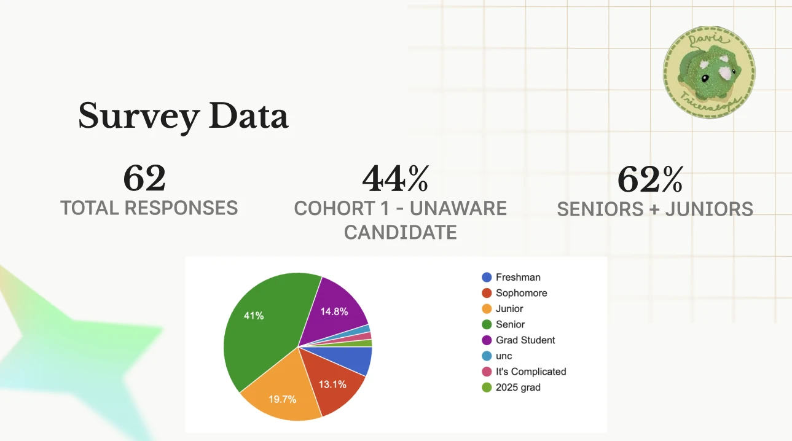
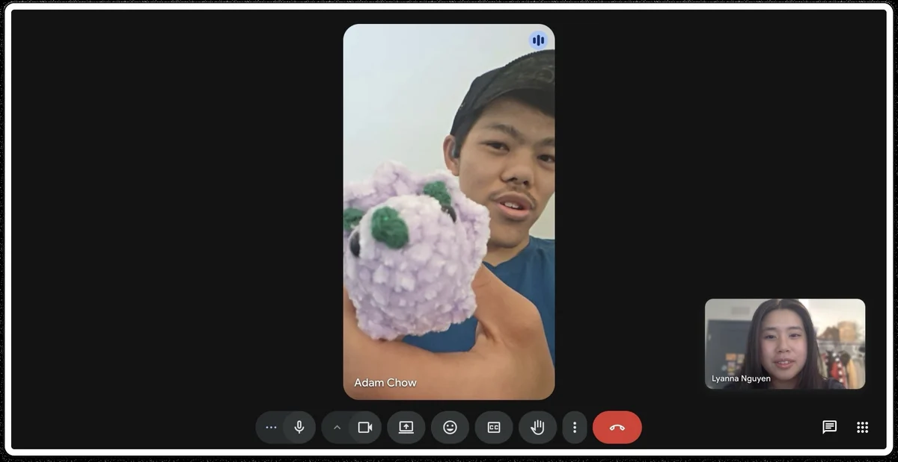
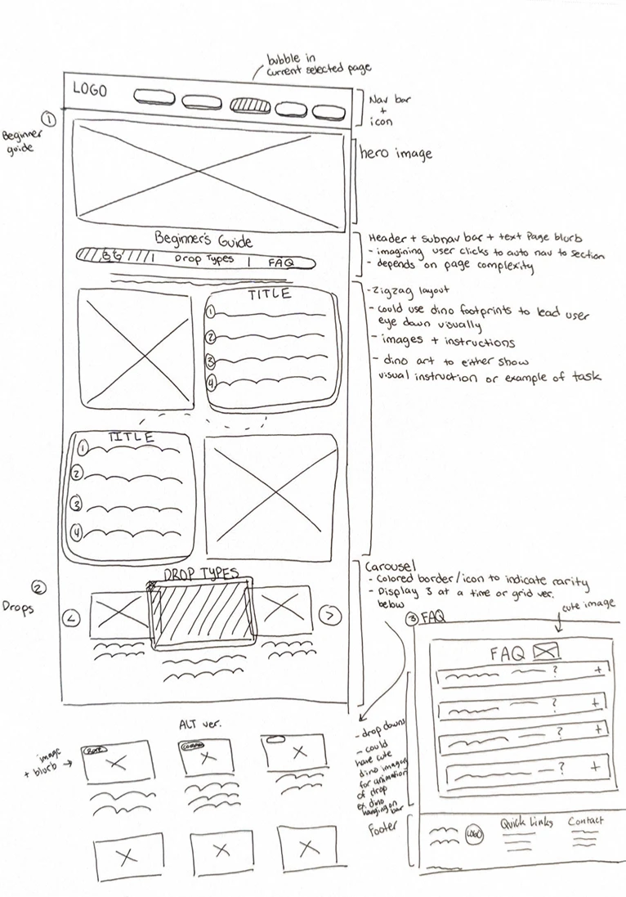

New members couldn't learn the rules or how to join a hunt, because everything was scattered across Discord


Discord was the only way in, and new members got lost in it
The rules and how to join a hunt were spread across a 41-channel Discord server. Students who found the club on Instagram often didn't know drop info lived on Discord at all, so they hit a dead end before their first hunt.
No single place explained how to join, so interested students stalled at the handoff from Instagram to Discord, and the club lost them before they ever hunted.
“I followed the Instagram but I didn't know you had to go on Discord to find drop info.”Interview participant
Who I designed for
Has never heard of Triceratops and lands on the site cold.
Gap: awarenessHas seen a drop or heard the name, but hasn't joined Discord yet.
Gap: conversionAlready involved, and needs specifics like the next drop, rules and yarn types.
Use: quick referenceI had to learn to build the site while I was designing it
No backend experience and no prior Claude Code experience.
I was both the designer and the developer, so every handoff was to myself.
No data on where newcomers dropped off in Discord, so I relied on surveys and interviews.
Club information existed only on Discord and Instagram.
4 months to design and ship, while learning GitHub and Cloudflare.
Rules, not discovery, were the biggest barrier to joining
students who knew about the club but hadn't joined said not knowing the rules stopped them. Active hunters agreed: the rules were hard to understand and scattered across Discord.


Testing the mid-fi showed where the page still failed
6 students and club members, 5 tasks: first impressions, setting up notifications, finding a drop type, finding post-claim steps, and finding ways to get involved. I ran 2 of the sessions.
- 3 of 6hesitated or couldn't find what to do after claiming a dino. One said they wouldn't read the rules: they just wanted “what to do and what to do after.”
- 2 of 6mentioned scroll fatigue or too much text.
- 2 of 6missed the notification steps or didn't see why drops needed setup.
I rebuilt Getting Started around short, numbered steps that explain the rules, then hand new members off from Instagram to Discord.
I treat these findings as directional: the sample was small and self-selected (shared through Discord and personal networks), and testing used a mid-fi prototype with placeholder content.
See more research: affinity map, IA, SWOT
I cut what overwhelmed new members, and kept what guided them
Three directions were on the table. I rejected each one for a specific reason, and each rejection shaped what shipped.
Show everything the client gave us
Mentors called the dense mid-fi congested, a teammate said the graphics and boxes made the page too long, and 2 of 6 testers mentioned scroll fatigue.
Short numbered steps, rules grouped under their own headers, and more space between sections. See the before/after ↑
Play every step's GIF at once in the Discord notification setup
Competing motion and text overloaded new members, made the page harder for anyone sensitive to motion, and 2 of 6 testers had already missed the notification steps.
4 concise steps with still images and direct language, so one instruction is in focus at a time.
Remove the boxes entirely
The client said the page read “too much like a rulebook,” but testers felt lost and didn't know where to look first. Removing every box would have taken away their starting point.
A compromise: keep the boxes that give general guidance, and cut the filler ones, like “I won, what now?” on Flash Sales, for real claiming steps.
Two guides that take a newcomer from “how do I join?” to their first hunt
Getting Started
- 1Notifications in 4 stepsA still screenshot and direct language instead of GIFs (Option B).
- 2Guidance boxesKept where they tell a first-timer where to start (Option C).
- 3Rules under headersWhat to do and not do as short, scannable steps (Option A).
- 4After-claim guideStep by step, not a text block, because 3 of 6 testers couldn't find these steps.
- 5Higher-contrast buttonsA mentor flagged that the green CTAs failed WCAG. I rebuilt the button and text colors and checked them with a contrast tool, including for color blindness.
- 6Drop types in pop-upsThere was far more content than one card could hold clearly, so each drop type opens its own pop-up.
Flash Sales

- 1Entering in 4 stepsThe same numbered-step pattern as Getting Started, beside one still screenshot.
- 2Real claiming stepsThe filler “I won, what now?” box became what to actually do next: pay within 2 hours, then watch for pickup info (Option C).
Edge cases I fixed before launch
- Desktop and mobile sizing mismatches
- Responsive breakpoints that didn't hold at smaller screens
- Missing hover and empty states, and components that didn't match the design system
Process: 1 lo-fi → 1 mid-fi → 2 hi-fi desktop → 2 hi-fi mobile

Our onboarding pages shipped, approved by the client!
After QA, my design lead and the client reviewed the final Getting Started and Flash Sales pages, approved them, and put them live on the club's site. Our mentors had called Getting Started the strongest visual direction of the project.
No usage data yet: testing was one mid-fi round with 6 people, and the hi-fi was reviewed by mentors, my lead and the client rather than tested with users.
Next time, I'd
- Protect hi-fi testing. Mentor feedback filled the gap, but it isn't the same as watching new members use the pages.
- Cut content on purpose. Fitting in everything the client gave me made the page harder to use.
- Check accessibility, not assume it. Contrast, motion, sizing and states, every time.
- Write the QA checklist first. Claude Code caught my edge cases; the same checklist should guide both design and code.
After launch, I'll measure: Discord click-throughs from Getting Started · repeat rules questions in Discord · whether testers find post-claim steps unaided.
Gratitude & special thanksThank you to my wonderful team!
A special shout-out to my teammates [teammate names]! And a big thank you to our design lead [design lead name] for guiding our team from research to launch, to our industry mentors for their honest feedback, and to UC Davis Triceratops for trusting us with their club.